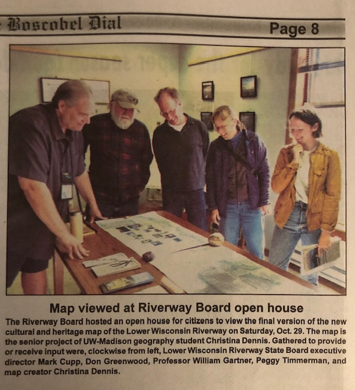

Lower Wisconsin Riverway Nature and Culture Maps
This map is the first place winner of the Spring 2022 Barbara Bartz Petchenik Award at the undergraduate level.
 I created it for my year-long senior honors thesis project, advised by Bill Gartner. The focus of the project is incorporating user-centered design into mapping the natural and cultural resources of the LWSR.
In April, 2022, I presented my progress at the UW-Madison Senior Honors Thesis Symposium, which was a requirement for receiving a summer research grant that the the UW Madison Honors Program and College of Letters and Science awarded me in 2021.
I created it for my year-long senior honors thesis project, advised by Bill Gartner. The focus of the project is incorporating user-centered design into mapping the natural and cultural resources of the LWSR.
In April, 2022, I presented my progress at the UW-Madison Senior Honors Thesis Symposium, which was a requirement for receiving a summer research grant that the the UW Madison Honors Program and College of Letters and Science awarded me in 2021.
 This project is still ongoing. The map has changed as I continue to met with people and collected user input. Currently we are securing funding to print the map for free in places along the riverway. The current printed dimensions are 42x24in.
This project is still ongoing. The map has changed as I continue to met with people and collected user input. Currently we are securing funding to print the map for free in places along the riverway. The current printed dimensions are 42x24in.

Here are some articles about the meetings on the riverway!
Spring Green, August 25, 2022
Spring Green, September 22, 2022